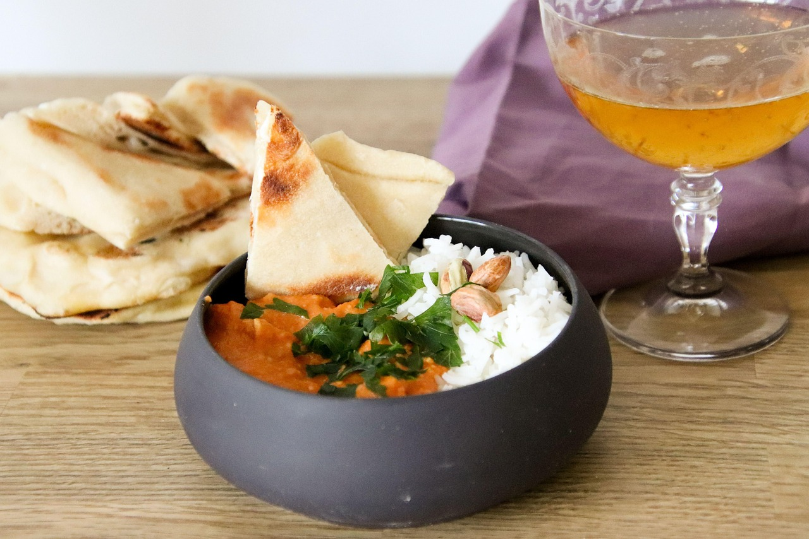

Butter Chicken
Home

Description
a savoury and filling dish with chicken, tomato, ginger, garlic, butter and cream.
the secret must have ingredient "kasoori methi" awakens Alladin in your kitchen
recipe inspired by: s-kueche
Ingredients
- 50g garlic
- 80g ginger
- 1 tea spoon chili powder
- 700g chicken breast
- 2 spoons lemon juice
- salt
- 100g yoghurt
- 1 tea spoon kasoori methi
- 1 tea spoon mustard oil
- 1 heaping spoon ginger garlic paste
- 4 spoons butter
- 2 onions
- 1 spoon sugar
- 1 tea spoon garam masala
- 0.5 tea spoon cinnamon
- 0.25 tea spoon cardamom
- 2 gloves
- 1 spoon ginger garlic paste
- 650ml canned tomatoes
- 1 spoon paprika powder
- 1 spoon kasoori methi
- 100ml heavy whipping cream
- salt & pepper
- 3 spoons cashew paste
- Create a ginger-garlic paste by blending roughly chopped ginger and garlic with a small amount of water until smooth.
- Dice the chicken breast into cubes. In a large bowl, combine yogurt, lemon juice, mustard oil, one tablespoon of the ginger-garlic paste, chili powder, and a teaspoon of kasoori methi.
- Add the chicken pieces to the marinade and mix until evenly coated. Cover the bowl and refrigerate for at least 30 minutes, though marinating for several hours or overnight will yield more tender results.
- Heat a tablespoon of oil or butter in a pan over medium-high heat. Add the marinated chicken pieces (shaking off excess marinade) and cook until seared and cooked through.
- Remove the chicken from the pan and set it aside.
- In a large pot or Dutch oven, melt the butter over medium heat. Add the finely chopped onions and sugar, sautéing for 8-10 minutes until they soften and turn a light golden brown.
- Add the garam masala, cinnamon, cardamom, and cloves to the onions. Stir constantly for about 60 seconds until the spices are fragrant.
- Stir in the remaining ginger-garlic paste and cook for another 30 seconds.
- Add the canned tomatoes and paprika powder. Bring the mixture to a simmer, then reduce the heat and let it cook for 15-20 minutes, allowing the flavors to meld.
- Carefully puree the sauce directly in the pot using an immersion blender until completely smooth and creamy.
- Stir in the heavy cream, cashew paste (if using), and the seared chicken pieces.
- Crumble the remaining teaspoon of kasoori methi between your fingers and add it to the sauce.
- Let the curry simmer gently for 10-15 minutes for the flavors to combine and the chicken to heat through.
- Season generously with salt and pepper to taste. For extra heat, add a pinch of chili powder.
Serving Suggestion: Serve your homemade Butter Chicken hot with fluffy basmati rice or warm naan bread.